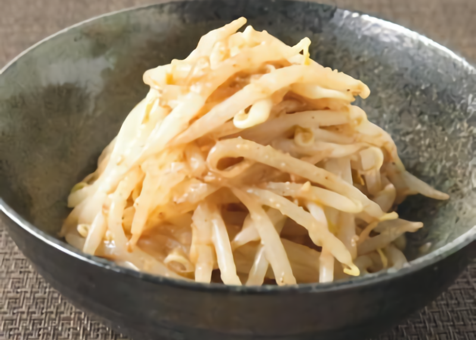
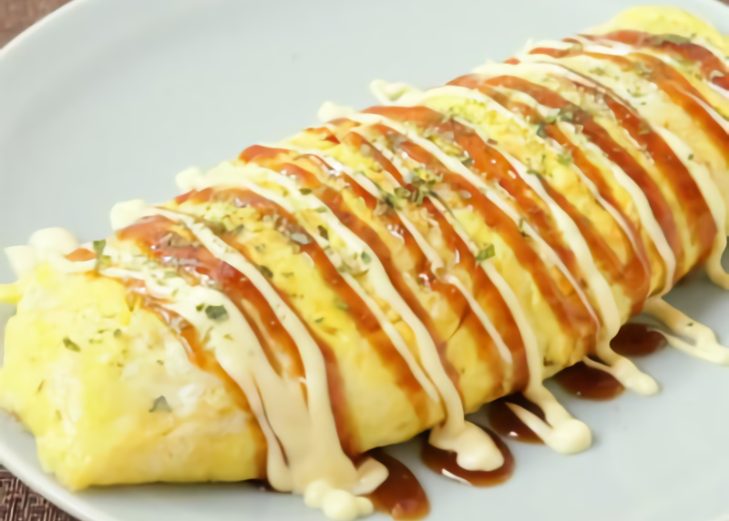

超簡単！もやしナムル
材料：もやし、ごま油、すりおろしニンニク、しょうゆ、白すりごま、鶏ガラスープの素
調理 ５分 費用目安 １００円
ささっと簡単にすぐ作れるもやしのナムルのご紹介です。 電子レンジで加熱して調味料と合わせるだけなので火も使わずにお手軽に作れます。 忙しいときや、お酒のおつまみにいかがでしょうか。 お好きな野菜を加えてアレンジしてみてください。
簡単！もやしとキャベツの卵包み
材料：豚バラ肉、もやし、ニラ、鷹の爪輪切り、オリーブオイル、しょうゆ、ごま油、料理酒、みりん、黒こしょう
調理 １０分 費用目安 ３００円
糖質10.8g/373kcal（1人分） シャキシャキした野菜がたっぷり！ ふんわりと仕上げた卵で包んだお好み焼きのような味わいを楽しめる一品です。 お好み焼きの生地で使用する粉類を卵で代用し、 糖質を抑えています。ぜひ作ってみてくださいね。
